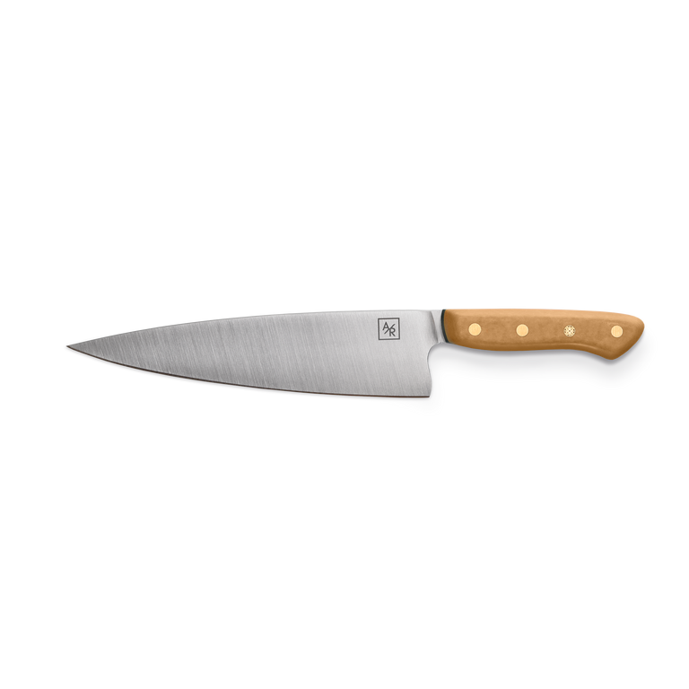
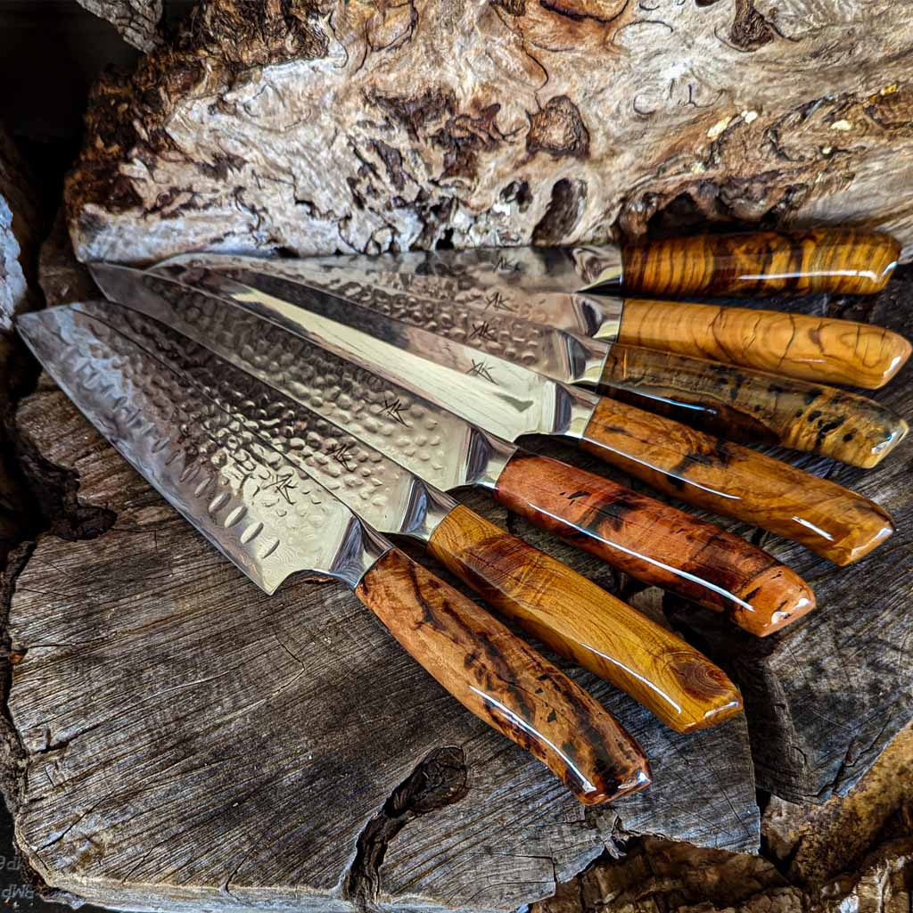
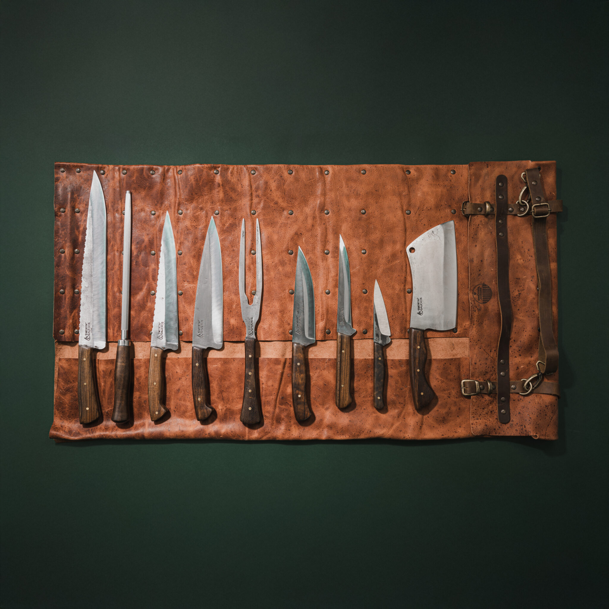
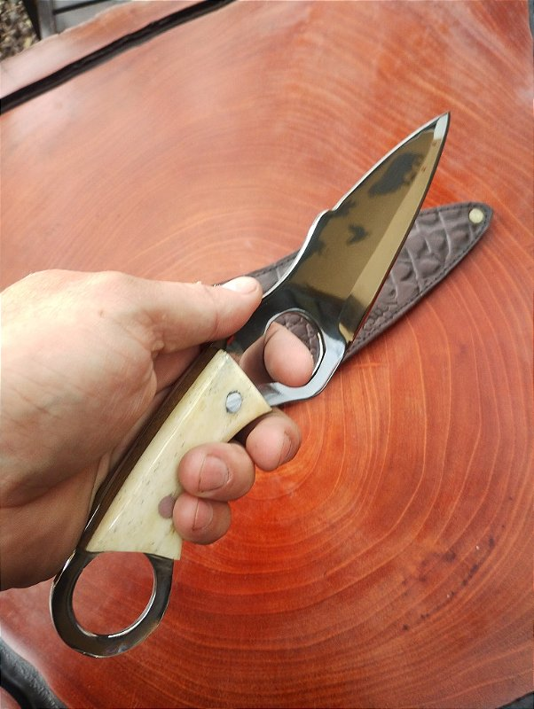
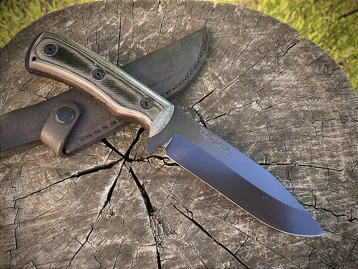
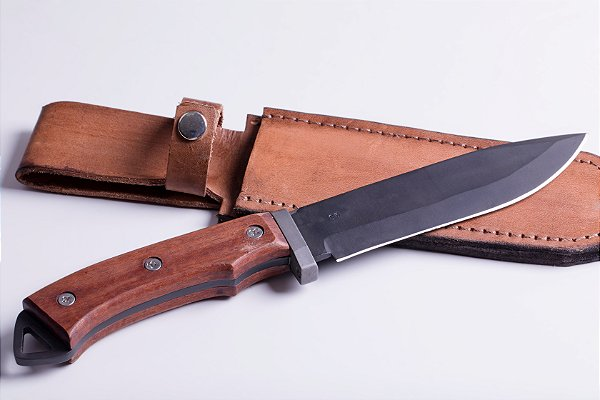
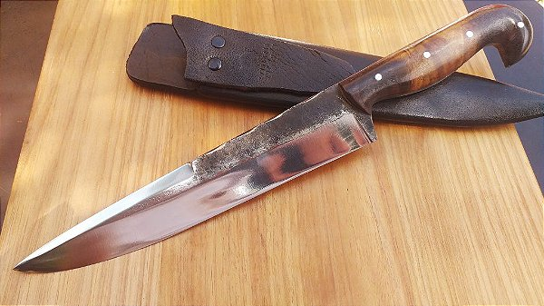
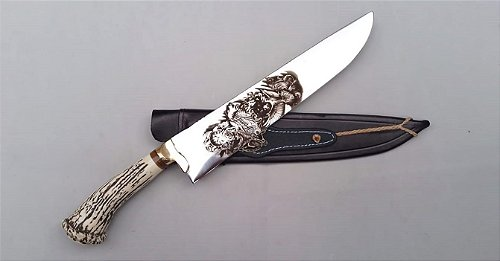

Tipos de Facas Artesanais
Conheça nossa linha completa de facas, cada uma desenvolvida para uma finalidade específica.

Mais VendidaFaca do Chef
Lâmina de 20 cm em aço carbono 1095, cabo em madeira de nogueira. Ideal para cortes precisos na cozinha profissional.

Faca Santoku
Inspirada no estilo japonês, com lâmina de 18 cm, alvéolos anti-aderentes e cabo ergonômico em madeira de jacarandá.

NovoConjunto Cozinha (6 peças)
Kit completo com 6 facas artesanais para cozinha: chef, pão, desossa, legumes, filetar e faca de mesa. Estojo em couro incluso.

Faca de Caça
Lâmina robusta de 15 cm em aço carbono temperado, cabo em madeira e osso com bainha em couro costurado à mão.

Faca Jungle / Pesca
Lâmina fina e flexível de 17 cm para filetar peixes com precisão. Cabo antiderrapante em madeira tratada. Resistente à umidade.

DestaqueFaca de Sobrevivência
Full tang em aço D2, lâmina de 22 cm com serrilha parcial, cabo em micarta G10 com lanyards. Bainha tática em kydex inclusa.

Faca Gaúcha Tradicional
Peça de tradição gaúcha, lâmina de 20 cm em aço carbono, cabo em chifre de boi com virola em alpaca. Bainha em couro artesanal.

Faca Bowie Clássica
Inspirada no clássico americano, lâmina de 25 cm em aço 1095, cabo em madeira de imbuia com proteção em latão. Peça de colecionador.

Faca Bushcraft
Projetada para atividades de campo e camping. Lâmina escandinava de 12 cm em aço carbono, cabo em madeira de oliveira com textura antiderrapante.